先比較這次回報的三個畫面，再往下看六幕前導與各種收合狀態。
比較兩側皆為 iPhone 17 Pro · iOS 26.5 · 402 × 874 pt · 繁體中文 · 真實 App root。這是原生截圖，觸控、動畫與音訊請在獨立測試 App 確認。
腳底固定在地毯內，房間取景跟著同一個落點。
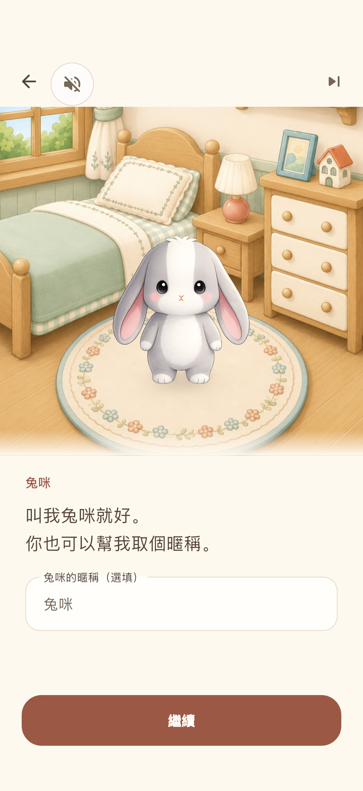
水瓶、數據與操作分區，拿掉大底框及提示膠囊。
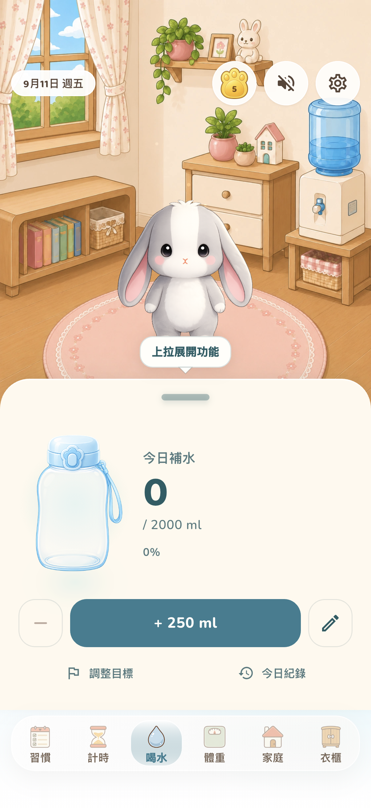
恢復鐘面，開始、設定與快捷仍留在收合面板。
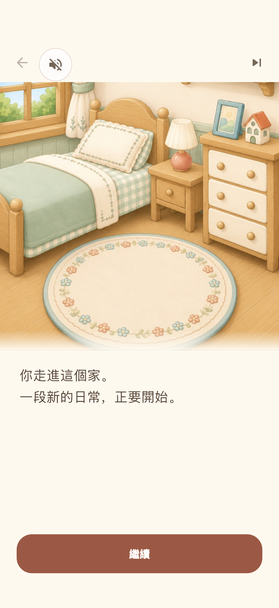
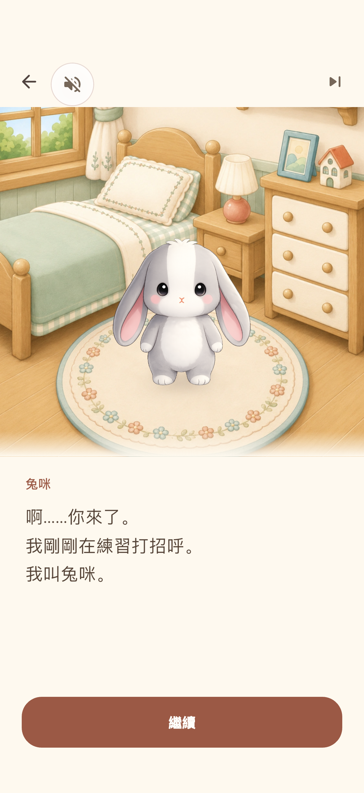
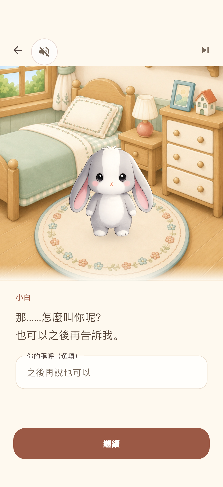
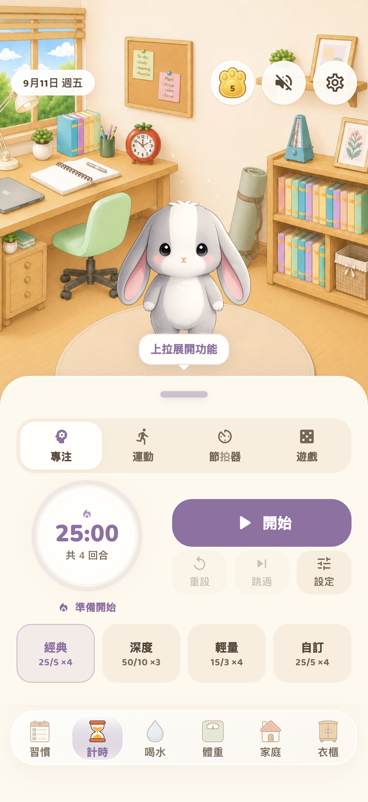
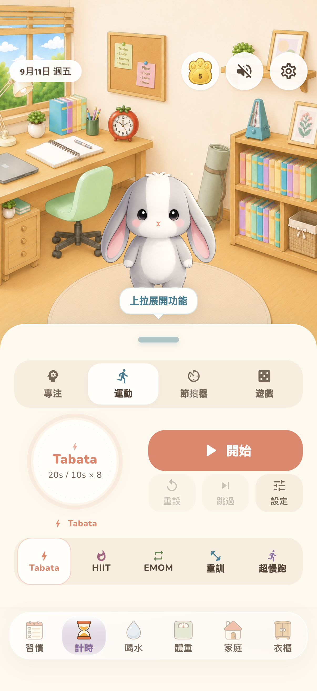
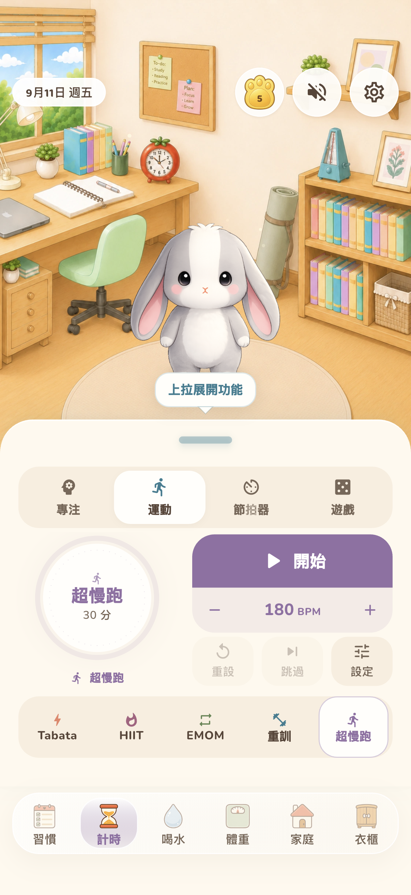
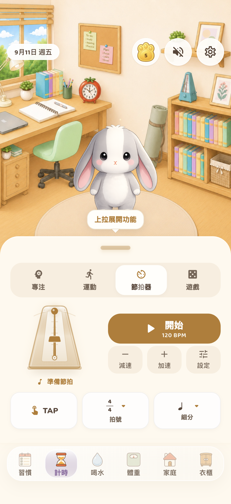
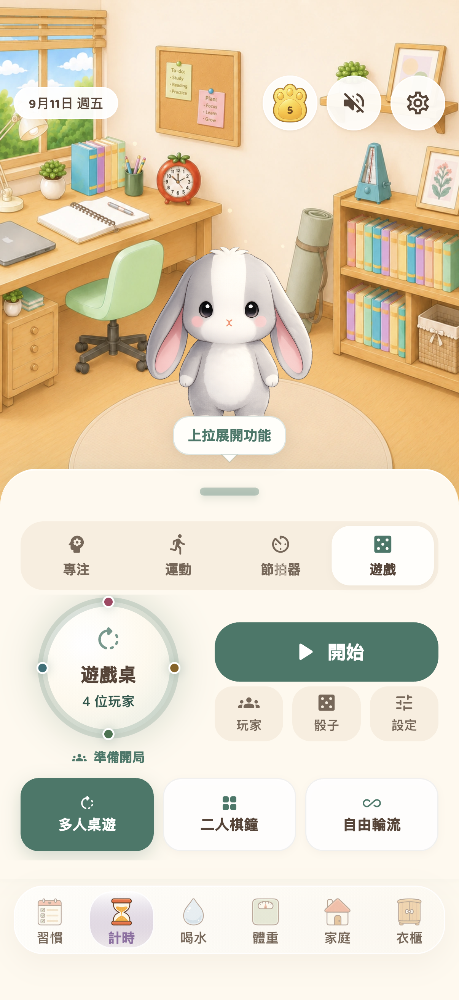
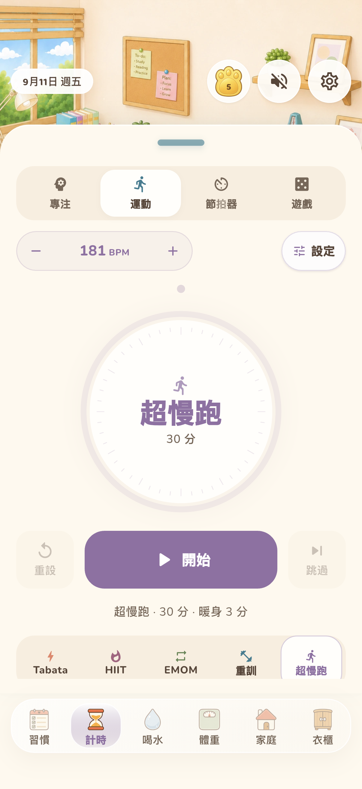
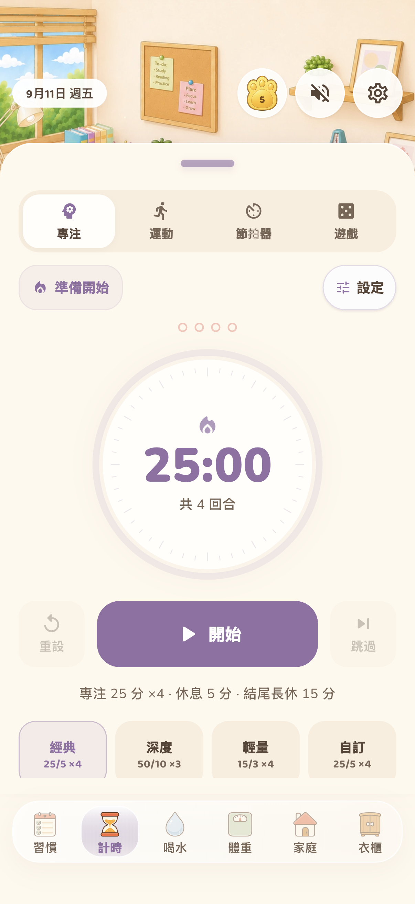
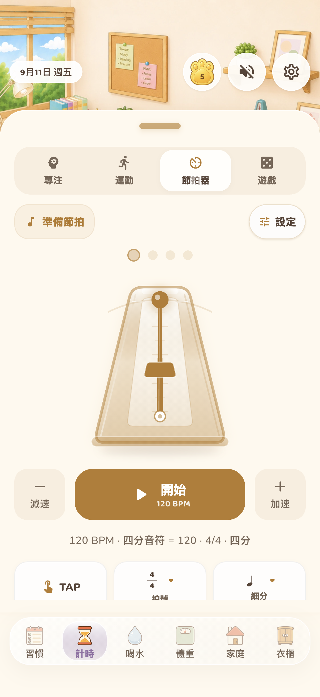
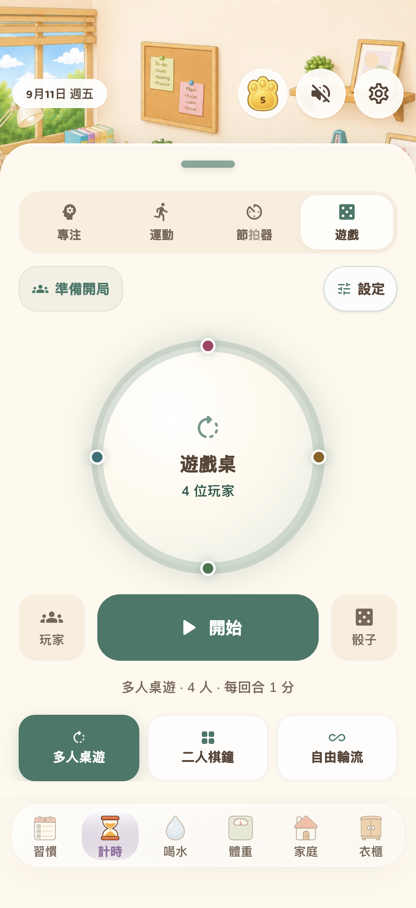
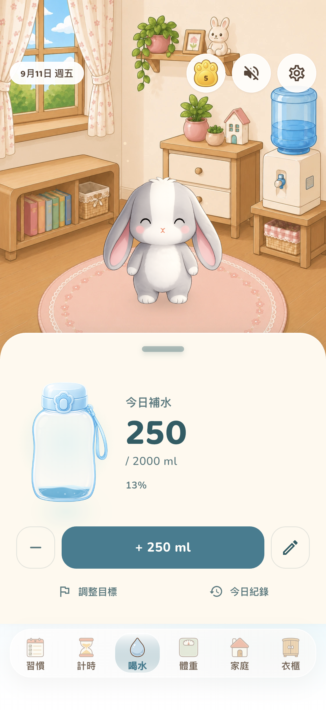
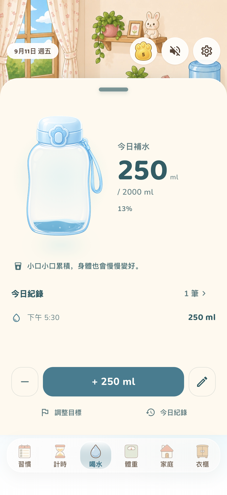
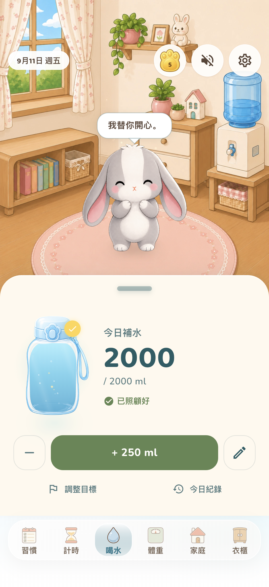
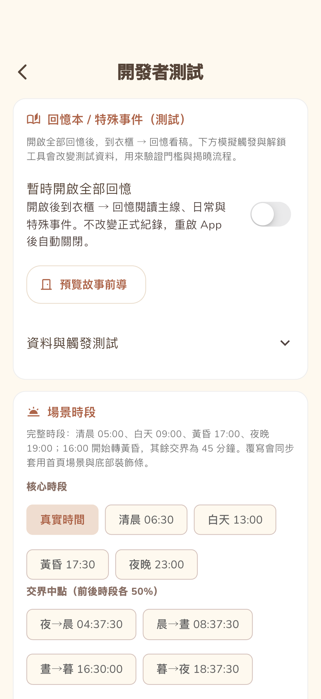
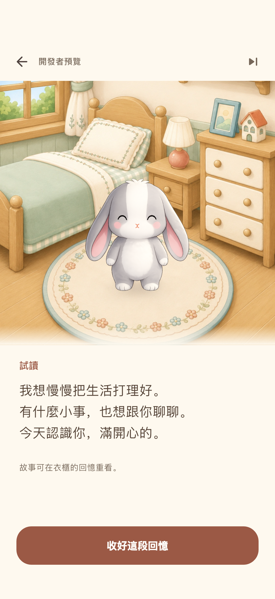
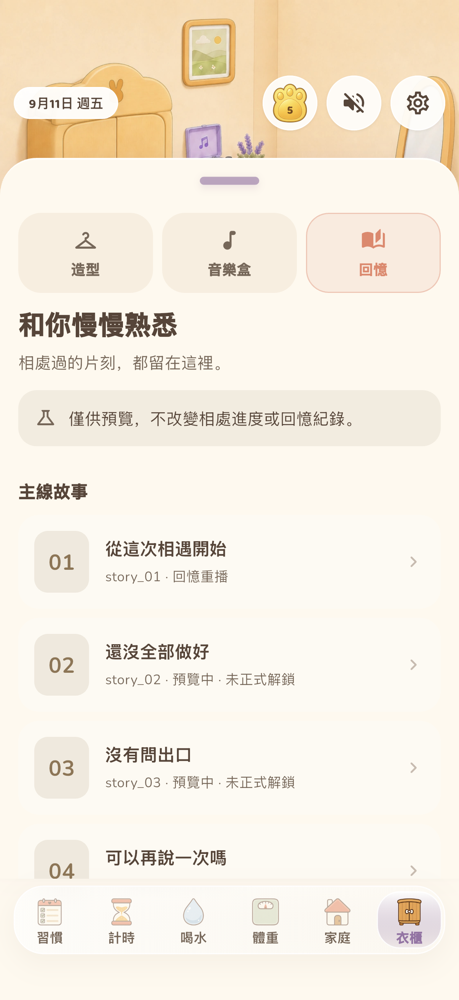
這是舊 V2 的歡迎頁，已被六幕故事前導取代，並非目前 App 的開場。本輪上方只展示現行前導，不再混排該舊畫面。